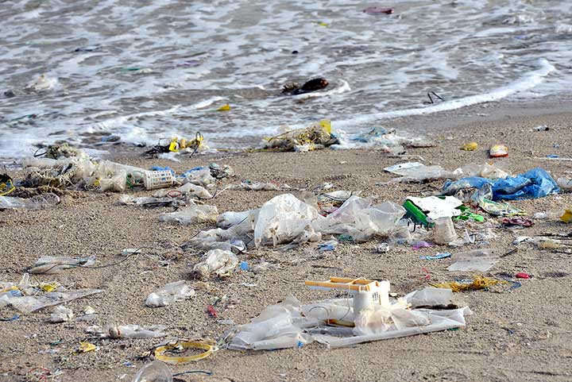

What makes a great suit feel even better? One that helps you do your bit for the environment.
Introducing the eco suit. Cut from recycled polyester-blend cloth with canvas and trims that have been consciously chosen for their low impact on the environment.
Even better, it doesn’t compromise on quality. Same great handle, same great tailoring, less plastic in landfill. In a small, limited-edition run that allows us to test, learn and eliminate unnecessary waste.
Because we all have to make smarter choices.
Plastic pollution is one of our world’s greatest threats.
Every second, a double-decker busload of plastic waste is dumped or burned in developing countries. It takes decades, if not centuries, to break down and releases harmful toxins as it does. Mismanaged waste injures and kills our wildlife and spreads disease among the communities where it’s dumped or left uncollected.

The UN Environment Programme estimates that more than 8.3 billion tonnes of plastic have been produced since the 1950s and about 60% it has ended up in landfill or a natural environment.
Our answer? Work with our suppliers to find plastic alternatives and recycle what’s already in circulation.
The most environmentally friendly thing for us to do would be to not make any suit at all. But we’re not in the business of making nothing, so we need to find a way to make what we make responsibly.
The recycled polyester we make just one Eco Suit from rescues up to 45 bottles from landfill and our oceans.
Cloth Saving up to 45 plastic bottles from landfill —
The Eco Suit’s cloth is woven with recycled polyester that reuses plastic bottles that would otherwise end up in landfill. Its fibres are certified to not give off harmful chemicals and, importantly, it feels as good to wear as virgin polyester (and maybe even better with the feel-good factor). Inside, we’ve lined the Eco Suit with fabric that’s a minimum of 99% post-consumer recycled polyester.
Inners Good on the inside —
There’s a lot more to a suit than its cloth. We’ve put the time in finding a factory that makes the Eco Suit’s shoulder pad, canvas, sleeve head roll and chest foam using sustainable manufacturing processes that are REACH-compliant. It all adds up.
Details Details matter – truly —
Every detail of our eco suit has been consciously chosen for its low impact on the environment. The thread is made from 100% recycled polyester yarns. Corozo nut buttons are a 100% natural material that’s durable, renewable and biodegradable. Even the pocketing fabric is OEKO-TEX® certified as free of chemical dye.
Packaging Good things come in good packages —
We’ve used recycled materials wherever possible and as much as possible, from 100% recycled polyester-satin inner labels to recycled paper swing tickets and recyclable polybags.
As for suit bags, it turns out the most sustainable suit bag is actually one that lasts, so we made ours from high-grade canvas that’s robust enough to stand the test of time and will biodegrade when it’s done – keeping it out of landfill.
What else we’re doing
The textile industry is one of the worst offenders for polluting the environment. Our goal is to reduce our impact anywhere we can. We’re committed to using our clout as a national retailer to close the loop and move towards sustainable manufacturing processes.
There’s a long way to go, but every step is one step closer. Here’s what we’re already doing and what we plan to do:
SUPPLIERS
We’re using our relationships with our suppliers to minimise our impact on the environment. We’ll encourage them to use responsible manufacturing processes, harness greener energy and innovate in alternative materials that are kinder to the environment.
We’re also partnering with fewer mills and makers so we can maintain closer relationships with them. Regular audits ensure our processes and logistics are compliant and help us identify new ways to move sustainable retailing forward.
PACKAGING & DISPLAY
We’re committed to removing or finding sustainable alternatives for one-use plastics used in our packaging and labelling by 2025.
We’re investigating recyclable or bio-degradable polybags. In the meantime, we’ve set our stores up with recycling bins to dispose of plastic polybags responsibly.
We’re also looking into alternatives for plastic hangers. Until we find a better solution, we’ll ask our customers to think twice before taking hangers and reuse them in-store instead.
CLOSING THE LOOP
We’re working with ReGain, the clothing-recycling app that takes in your unwanted old clothes and rewards you with discounts for new ones.
Up to 95% of post-consumer fashion that ReGain diverts from landfill is reused or recycled, with the remaining 5% going into energy production or upscaled into new clothes. It all adds up to the industry closing the loop and moving towards circular fashion.
Any unsellable returns or faulty product will now be sent to ReGain to recycle, saving up to 7,200 units from being otherwise destroyed or ending up in landfill.
The textile industry is one of the worst offenders for polluting the environment. We want to do our bit to change that. There’s a long way to go, but every step is one step closer.